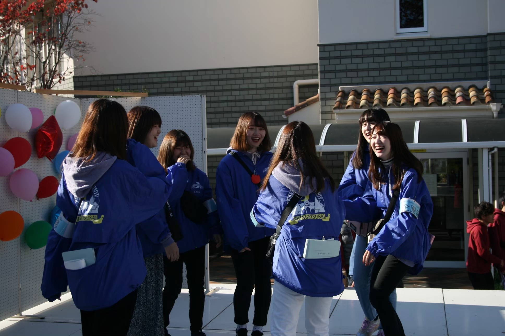
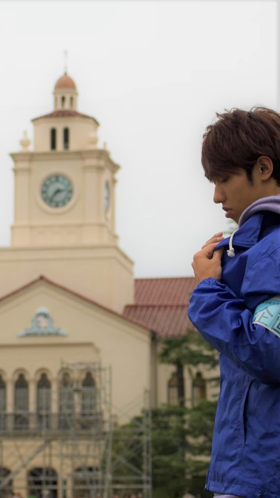
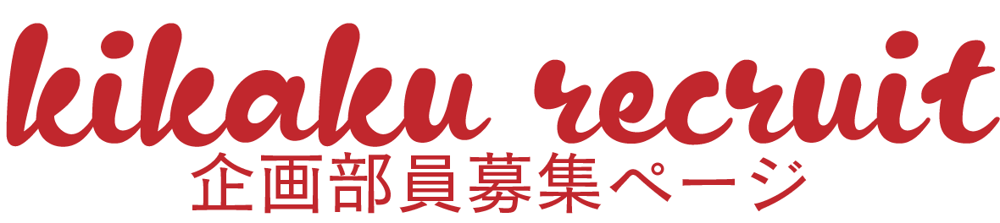
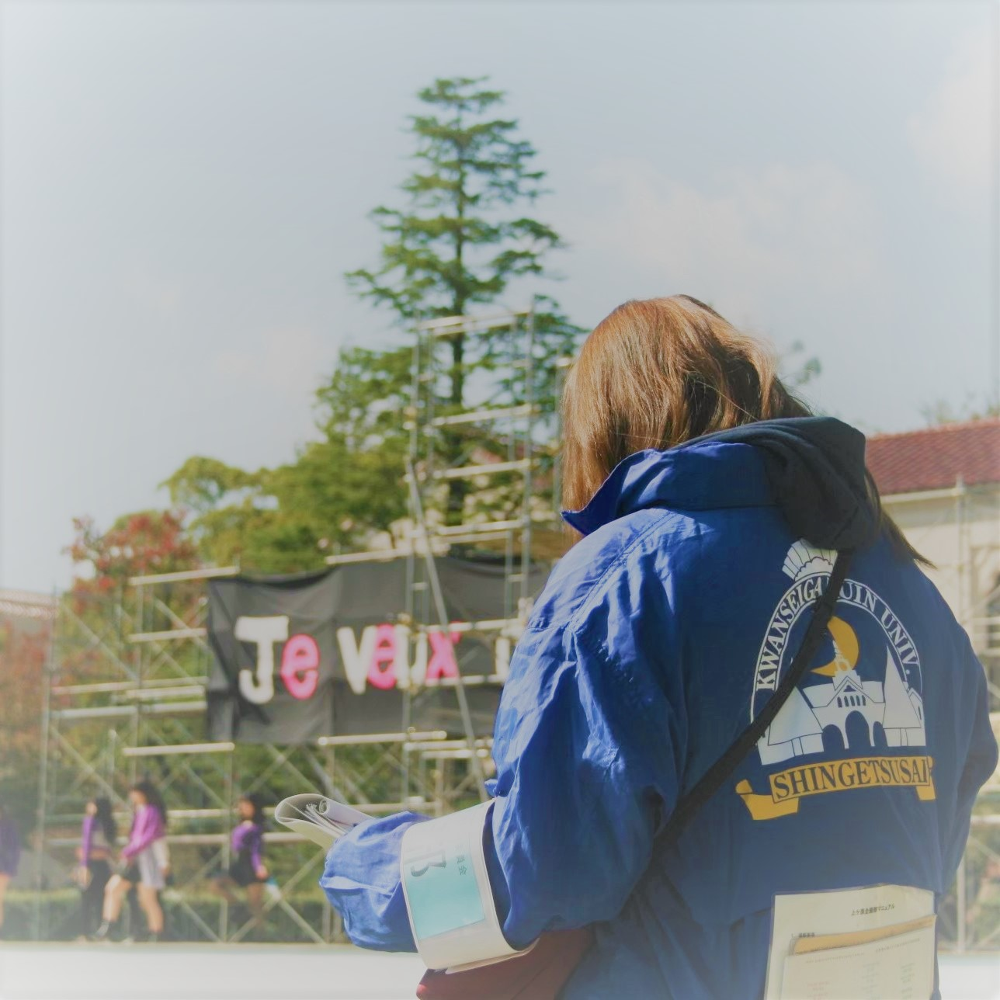
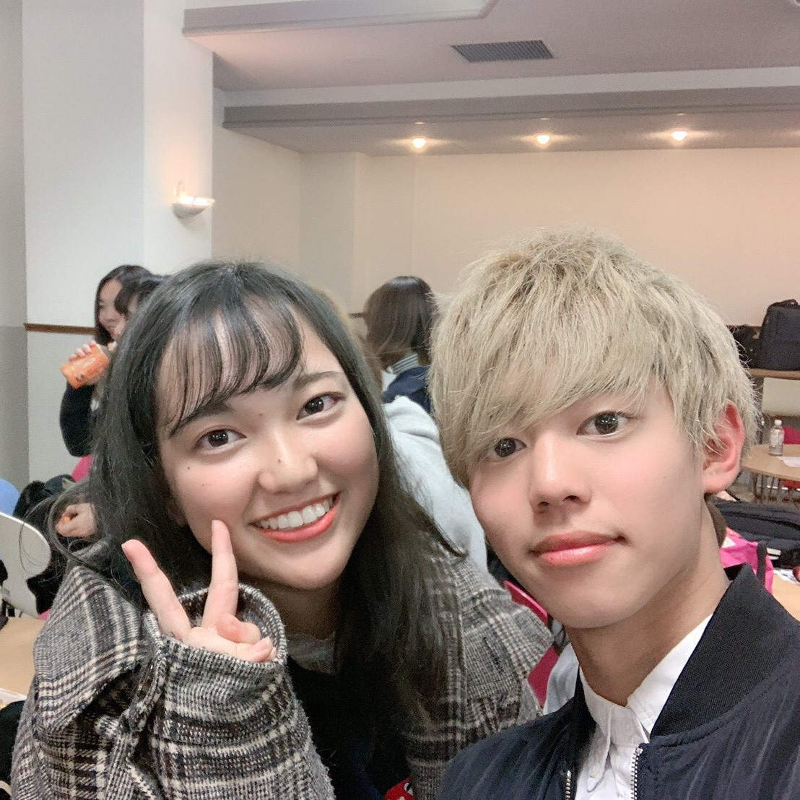
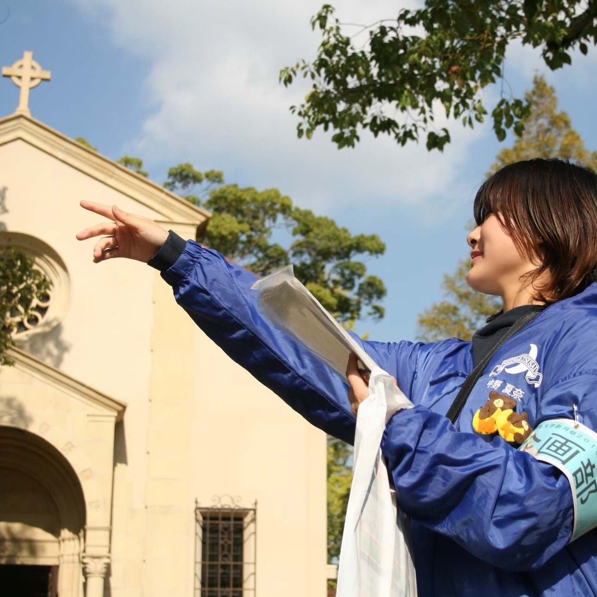
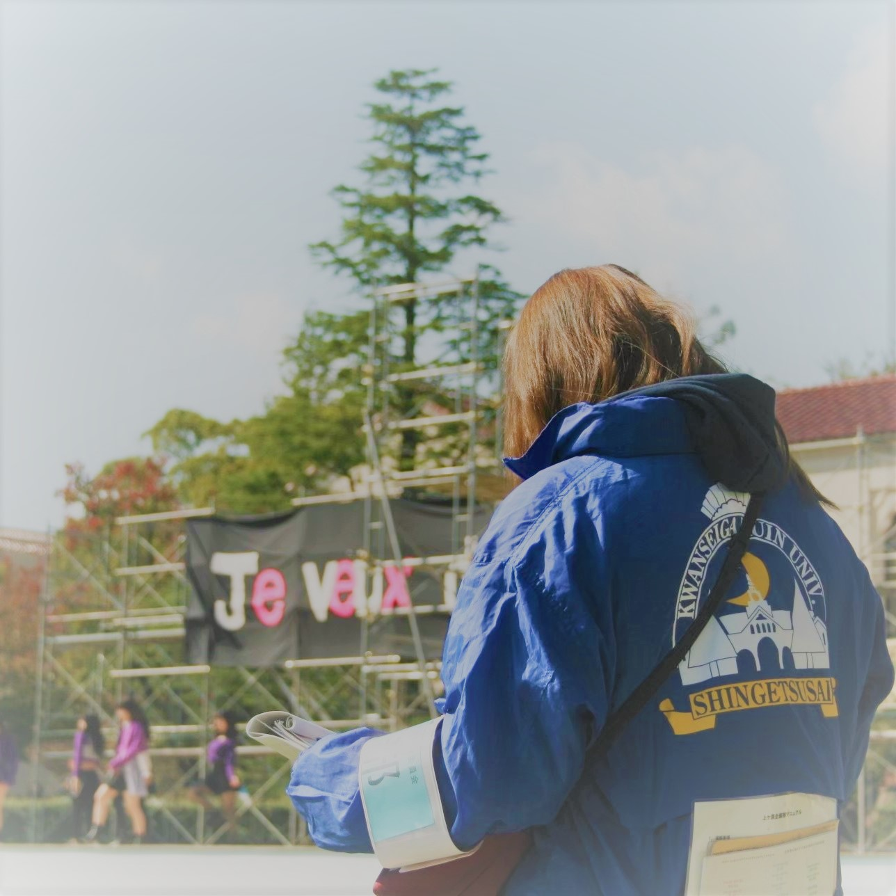
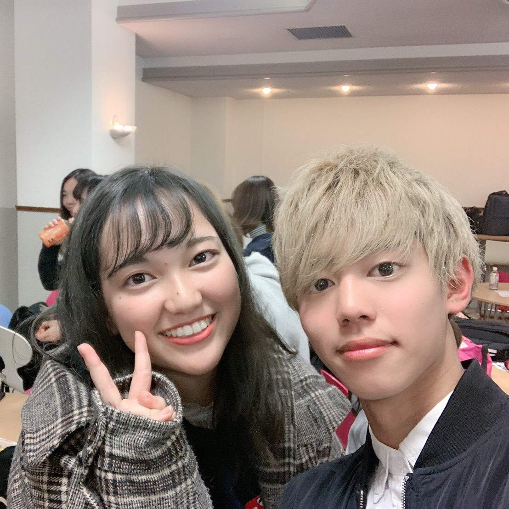
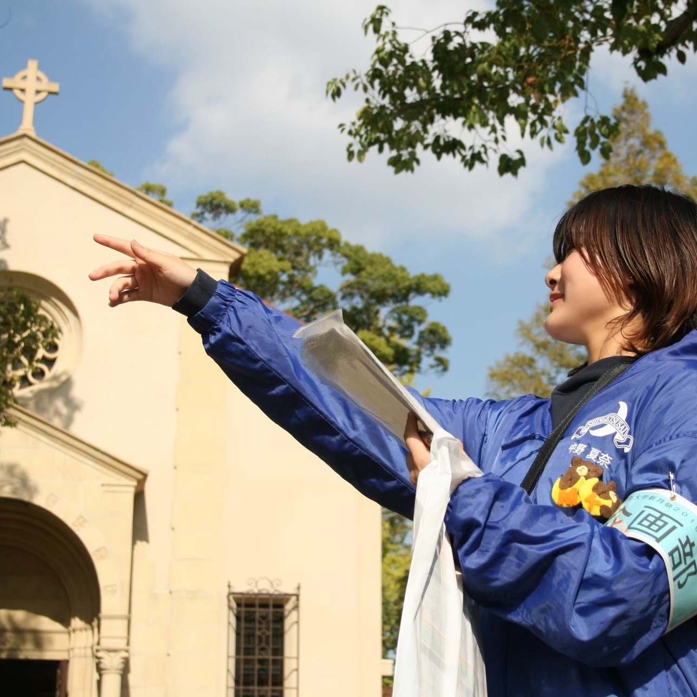

よくある質問/FAQ
Q1 どんな仕事をする部局なの？
+A1 大学祭の目玉は大きく分けて「学生企画」「模擬店」「実行委企画」の3つです。その内、「学生企画」「模擬店」を統括するのが「運営局」で「実行委企画」を統括するのが「企画局」です。我々「運営局企画部」は様々な学生企画団体の方々が円滑に企画を行えるようにお手伝いする仕事です。
Q2 「企画」「学生企画団体」とはなに？
+A2 「学生企画団体」が新月祭で行う演目を「企画」と呼んでいます。学生企画団体とは軽音サークルやダンスサークルなどの既存の学生団体だったり、新月祭のために結成された団体のことです。
Q3 活動はきついですか？
+A3 きつくはありません。確かに当日はなかなか仕事の量が多いですが、それは実行委全員がそうです。これは企画部に限った話ではないのですが、ある意味「仕事」に共に励み、艱難辛苦を共にした仲間というものは、ただ友達になるよりも数段濃い親友となります。 そのような経験ができることが大学祭実行委の良いところであり、他ではなかなか味わえない経験であると考えていますのでいたずらに「仕事は楽です！」とは言いません。時期にもよりますが、大学祭シーズン以外にはそこまで活動はありません。 本格的な仕事はじめは夏休みの会議になるでしょう。しかし、それ以前にも実行委として行うイベントなどがありますので、そのうちから友達は作ることができますよ。
Q4 「仕事仲間」のようにドライな人間関係ですか？仲いいですか？
+A4 単刀直入にいって我々企画部は仲がいいです。勿論毎年・全キャンパスで仲良くなるという保証はないのですが、前述の通り、大学祭の「仕事」という物は我々を強く結束させてくれます。確かに、話だけ聞いていれば大学祭の実行委はなぜそんな面倒で退屈なことをしているのだろうか？と疑問に思うこともあるでしょう。 しかし、それでも実行委の所属人数は全キャンパスで240人を超えています。この所属人数こそが、大学祭の仲の良さや言葉だけでは伝わらない魅力の証左になるのではないかと思っています。具体的には部で旅行に行ったり、実行委全体で行く沖縄旅行を部だけで回ったりする他、 下宿勢が多い三田キャンパスでは部員の家で何気ない集まりを催すことも多々あります。
Q5 マジメな人ばかりで面白くなさそう
+A5 半分正解で半分間違っています。ただ飲み友達を作りたいだとか、そういう人には向かないかもしれません。当日の我々の働きは、手前味噌ではありますが「マジメ」だと自負しています。 しかし、ただマジメなわけではなく、非常に個性的で面白くスマートな人が実行委に、そして企画部には集まっています。そもそも大学祭はお祭りですから、お祭りをきちんと楽しめる人が大学祭実行委なのです。
Q6 結局どの部局を選べばいいの？
+A6 こんな事を言ってしまって良いのかわかりませんが、新一回生が大学祭の部局の全ての仕事を理解することは不可能です。実際、私も全ての部局の仕事の詳細を把握しているわけではないですし、去年（入学時）には運営局と企画局の仕組みさえよく理解しておりませんでした。 そんな状況でこの企画部を選んだ理由は先輩でした。企画部の先輩の仲の良さや波長を感じ取って企画部へ入りましたし、周りもそういうような決め方をしています。それでいて部局選択を誤ったといっている人はいません。 今年は残念ながたCovid-19感染症の影響で新入生に直接会って履修指導や部局説明を行うことはできませんが、オンライン上でお話をする機会があります。もしよろしければそのような機会に参加していただき、各部局の雰囲気を感じ取っていただければと考えております。 最も、どの部局も良い先輩・雰囲気で迷ってしまうとは思いますけれども。
部長からのメッセージ/Message
ギャラリー/Gallery
 




